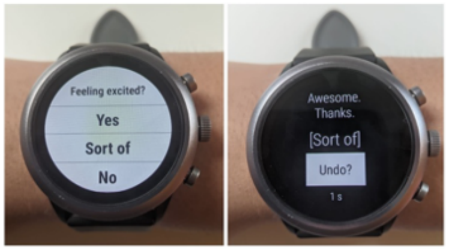

Overview of the study#
The Temporal Influences on Movement and Exercise (TIME) Study used mobile and wearable technologies to measure moment-to-moment experiences that shape our health behaviors and decision making. The goal was to use the data we collected to study how different contextual and situational factors explain the adoption and maintenance of health behaviors, such as physical activity, reduced sitting time, and sleep. The study data collection included using a combination of phone-based ecological momentary assessment (EMA), wearable-based micro-EMA (uEMA), and passive sensing to build predictive models of health behavior at the individual and group levels. The study used a within-subject case-crossover observational design run with ethnically-diverse emerging adults (ages 18-29), each for up to a 12-month period. Interested researchers are suggested to read the two protocol paper to find more details about the study.
Participant#
Participants included N=250 young adults (18-29 years) with personal Android smartphones who engaged in recommended levels of physical activity (PA) (> 150 min/week) or intended to start doing so within the next 12 months.
Study design#
Up to 12 months of data were collected via online questionnaires, EMA & uEMA, and passive sensing on smartwatches and smartphones. Specific measures included:
Online questionnaires at baseline, 6 months, and 12 months into the study
Continuous smartwatch wear (~23 hours/day every day including during sleep)
Interval-contingent (i.e., time-based) EMA questions on the smartphone
Smartphone-based end of day EMA survey (lasting 1-2 min) -> every night delivered 3 hours before self-reported sleep time
Smartphone-based wake/sleep survey (lasting 1 min)-> every 6-8 hours to confirm or establish previous/next sleep/wake time
Signal-contingent (i.e., randomly-prompted) EMA questions on the smartphone and smartwatch
Smartphone burst survey (1-2 min) -> 4-day burst periods occurred twice a month at least 7 days apart. Each burst period consisted of 2 weekend days and 2 weekdays. Surveys were delivered once per hour during participant’s self-reported waking hours.
Smartwatch uEMA survey (lasting 2-4 seconds) -> single questions that mirrored EMA measures, validated sensor measurements, or tested data validity. Up to 6 per hour during self-reported waking hours.
Context-sensitive EMA (i.e., contingent on events/exposures detected by built-in smartphone sensors) to improve utility of sensor data
Smartphone location survey (2-4 seconds) -> single question survey asking participants to semantically annotate (e.g., home, work, restaurant, library) their current locations were delivered when participants revisited staypoints (stayed for 3 minutes or more)

Online Questionnaire Measures#
Find detailed item description here.
General Health Questions
Physical Activity (IPAQ)
Usual Level of Lifestyle Physical Activities
Team Sports/Classes
Stage of Change for PA
Sedentary Behavior (SB)
Digital Media Use
Technology Use
Stage of Change for SB
Munich Chronotype
Sleep problems
Insomnia, snoring, restless leg syndrome
Stage of Change for Sufficient sleep
Dietary Screener
Disordered eating
Substance use
Watch wear
Country of origin
Acculturation
Demographics
TIPI (Big 5 Personality)
Self-esteem
Life Satisfaction
Perceived Stress
Stressful Life Events
Depression
Trait Anxiety
BIS/BAS
Self-control
Habit (PA, SB, Sleep)
PA Identity
Attitudes (PA, SB, Sleep)
Enjoyment (PA)
Intrinsic/Extrinsic motivation (PA)
Preference/Tolerance (PA)
Self-efficacy (PA, SB, Sleep)
Regulatory effort (PA)
Intentions (PA, SB, Sleep)
EMA Measures on Smartphones#
Find detailed item description here.

uEMA Measures on Smartwatches#
{kind=link}
μEMA questions are prompted 4 times an hour at random, with at least eight minutes guaranteed between 2 consecutive prompts using the following formula. The uEMA measures mirrored EMA measures but in a shorter form. For example, the question is “Feeling stressed today?” and the answer options are “Yes”, “Sort of”, or “No”. Full details about uEMA prompt scheduling can be found in the protocol paper.
Find detailed item description here.
Passive Sensing on Mobile Devices#
Passive sensing data were collected continuously from user’s own Android smartphones and Fossil Gen 4/5 smartwatches given by researchers. More information about these data can be found in the codebooks. The tables below show the types of sensor data we collected and different formats data are processed and stored in.
Raw log file: the most raw data logged directly from the mobile devices (example file)
Minute-level file: minute-level aggregation of raw logs (example file)
Hour-level file: hour-level aggregation of minute-level file (example file)
Day-level file: day-level aggregation of hour-level file (example file)
Physical activity and location
All motion summary measurements were computed based on accelerometer data from smartwatches. Location data were collected through Android Location API on the smartphones.
Watch MIMS (Monitor Independent Movement Summary unit): a type of measurement of motion summary that features harmonizing the processing of accelerometer data from different devices (reference)
AUC (area under curve) of watch accelerometer data: a type of measurement of area under the rectified curve of the raw accelerometer signal
SWaN (sleep-wearwake-wear and nonwear) (v1.0): an algorithm to distinguish between sleep-wear, wake-wear, and non-wear of smartwatch (reference)
Phone-detected activity type: detection of activity and confidence levels using Android Activity Recognition API, including in vehicle, on bike, on foot, running, still, tilting, walking and unknown (reference)
Phone-detected step count: steps of the last hour returned from Android Motion API (reference)
Phone-detected location: latitude, longitude returned from Android API (reference)
Semantic labels of phone location clusters: semantic labels collected from self-reported context-sensitive EMA surveys and OpenStreetMap databases on the phone location clusters detected by a modified density-based clustering algorithm (reference)

Smartphone state and usage
Screen states: power state (on/off) of the phone screen
Wi-Fi states: wifi state (on/off) of the phone
App use: use of app package
Notification: time and app package of posted phone notifications
Ringer mode: ringer mode of the phone
Battery and charging: phone battery level and charging states (on/off)

Smartwatch state and usage
Battery and charging: watch battery level and charging states (on/off)
Accelerometer missing: information on causes of minute-level watch accelerometer data being missing
Do not disturb: whether watch was in DND mode